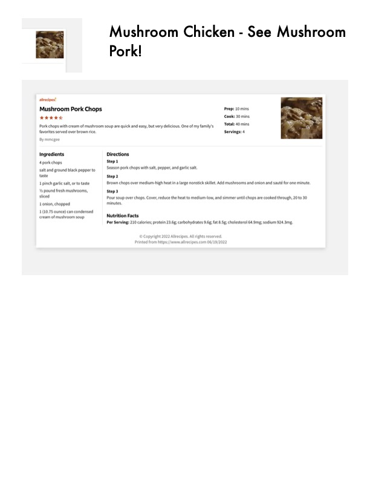

Mushroom Pork Chops

Original cookbook page 300
Pork chops with cream of mushroom soup are quick and easy, but very delicious. One of my family's favorites served over brown rice. Recipe by mmcgee from Allrecipes.
Prep: 10 minutes • Cook: 30 minutes • Total: 40 minutes
Ingredients
- 4 pork chops
- Salt and ground black pepper to taste
- 1 pinch garlic salt, or to taste
- ½ pound fresh mushrooms, sliced
- 1 onion, chopped
- 1 (10.75 ounce) can condensed cream of mushroom soup
Instructions
- Season pork chops with salt, pepper, and garlic salt.
- Brown chops over medium-high heat in a large nonstick skillet. Add mushrooms and onion and sauté for one minute.
- Pour soup over chops. Cover, reduce the heat to medium-low, and simmer until chops are cooked through, 20 to 30 minutes.
Recipe #300 from collection